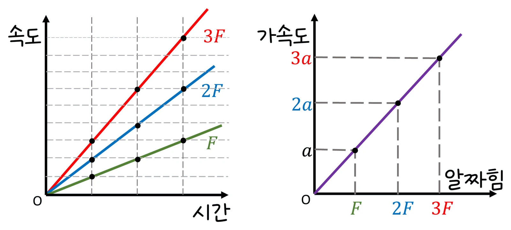
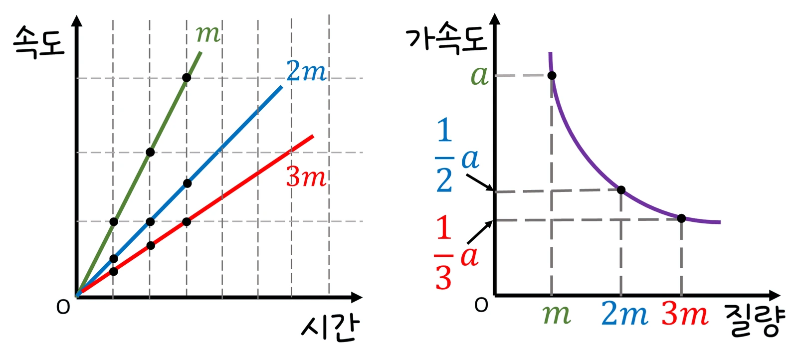
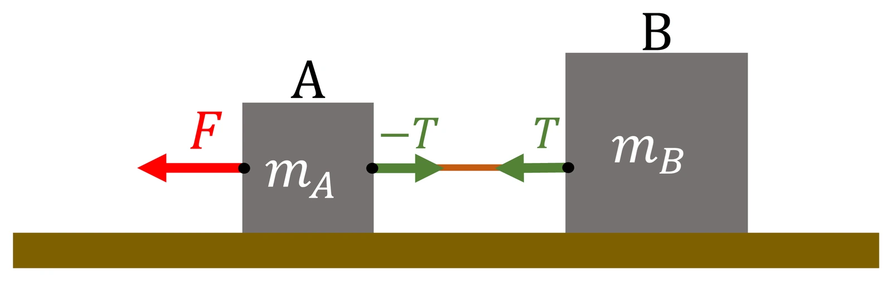

고2 물리학 · Ⅰ 힘과 에너지 · 웹툰 2화 「브레이크를 밟은 순간」
실험에서 수레 질량(0.25~1.0 kg)과 추 질량(10~50 g)을 바꿔 가며 광전문 두 개로 속력을 재고 가속도를 구했습니다. 추가 무거울수록 가속도가 커지고 수레가 무거울수록 작아졌으며, a = mg ÷ (M + m)과 일치했습니다. 뉴턴 제2법칙과 등가속도 운동을 정리합니다.
실험 데이터 되짚기
트랙 마찰·도르래 질량 무시, g = 9.8 m/s². 광전문은 0.20 m와 0.70 m에 있고 깃발 길이 1.0 cm입니다.
| 수레 M | 추 m | 힘 mg (N) | 가속도 (m/s²) | 0.70 m 지점 속력 √(2as) | 장력 T = Ma |
|---|---|---|---|---|---|
| 0.5 kg | 20 g | 0.196 | 0.377 | 0.73 m/s | 0.19 N |
| 0.5 kg | 50 g | 0.49 | 0.89 | 1.12 m/s | 0.45 N |
| 1.0 kg | 50 g | 0.49 | 0.47 | 0.81 m/s | 0.47 N |
| 0.25 kg | 50 g | 0.49 | 1.63 | 1.51 m/s | 0.41 N |
측정 가속도 (v₂ − v₁) ÷ t₁₂와 이론값 mg ÷ (M + m)의 점들이 기울기 1인 점선 위에 놓입니다 — 가속도는 알짜힘에 비례하고 총질량에 반비례합니다. 추가 가속되므로 장력은 추 무게보다 작습니다.
물체의 가속도는 알짜힘에 비례하고 질량에 반비례합니다(F = ma). 수레–추 장치에서 계를 움직이는 힘은 추의 무게 mg이고, 실로 연결된 수레(M)와 추(m)가 함께 가속되므로 움직이는 총질량은 M + m입니다: a = mg ÷ (M + m). 추의 질량을 늘리면 힘이 커져 가속도가 커지고, 수레 질량을 늘리면 가속도가 줄어듭니다. 광전문 두 개로 두 지점의 속력을 재고 a = (v₂ − v₁) ÷ t₁₂로 가속도를 구합니다((v₂² − v₁²) ÷ 2s로 구해도 같음). 실의 장력 T = M·a(수레만 보면) = m(g − a)(추만 보면). 추 질량 ≪ 수레 질량이면 a ≈ mg/M로 힘에 거의 비례하고, 추가 무거워지면 M + m 효과로 비례에서 벗어납니다.
교재 그림
가속도는 힘에 비례하고, 질량에 반비례한다


위: 질량은 그대로 두고 힘을 2배, 3배 → 속도–시간 그래프의 기울기(가속도)도 2배, 3배. 아래: 힘은 그대로 두고 질량을 2배, 3배 → 가속도는 ½, ⅓.
움직여 보기
수레와 추 — 실험 장치를 다시 돌려 보자
추를 무겁게 하면 그래프가 가팔라지고(힘↑), 수레를 무겁게 하면 완만해집니다(질량↑). 속도–시간 그래프의 기울기 = 가속도입니다. 실제 속도는 화면보다 느리게, 시간 비율은 같게 보여 줍니다.
교재 그림
줄로 묶인 두 물체 — 장력은 서로 반대로 같은 크기

실험의 수레와 추도 같은 구조입니다. 두 물체를 한 덩어리(M + m)로 보면 a = mg ÷ (M + m), 수레만 따로 보면 수레를 끄는 힘은 장력 T = Ma뿐입니다.
v = v₀ + at, s = v₀t + ½at², v² − v₀² = 2as. 이동 거리는 속도–시간 그래프 아래 넓이입니다. 웹툰 2화: 1000 kg 자동차에 제동력 5000 N → a = 5 m/s². 10 m/s에서 멈추는 데 2초·10 m, 20 m/s에서는 4초·40 m — 제동 거리는 속력의 제곱에 비례합니다. 정지 거리 = 반응 거리(반응 시간 동안 원래 속력으로 달린 거리) + 제동 거리: 30 km/h면 약 15 m, 50 km/h면 약 33 m. 어린이 보호구역에서 30 km/h로 제한하는 이유입니다.
움직여 보기
속력 2배면 제동 거리는? — 웹툰 2화 내기
속력이 2배면 멈추는 시간도 2배, 그동안 평균 속력도 2배 → 제동 거리 4배. 반응 시간을 0.7초쯤으로 올려 정지 거리(반응 + 제동)도 비교해 보세요.
트랙 마찰, 도르래·실의 질량, 공기 저항을 무시했습니다. 실제로는 마찰력 f만큼 알짜힘이 줄어 a = (mg − f)/(M + m)이고 도르래의 회전 관성도 조금 작용해 측정 가속도가 이론값보다 5~10 % 작게 나옵니다. 깃발 통과 시간으로 잰 속력은 그 구간의 평균 속력이라 순간 속력보다 아주 조금 작습니다. 같은 엔진 힘이면 짐을 실은 트럭이 빈 트럭보다 천천히 가속되고, 엘리베이터가 올라가기 시작할 때 몸이 무거워지는 느낌은 가속도에 따른 추가 힘(N = m(g + a)) 때문입니다.
g = 9.8 · 장력 T = Ma = m(g − a) · 제동 거리 ∝ v² · 정지 거리 = 반응 거리 + 제동 거리
“달리던 차가 멈추려면 운동 방향과 반대로 힘이 작용해야 해. 가속도는 a = F ÷ m. 1000 kg 자동차에 제동력 5000 N이면 5 m/s² — 1초마다 5 m/s씩 느려지지. 등가속도 운동에서 이동 거리는 속도–시간 그래프 아래 넓이야.”
웹툰 2화 · 뭉치: “같은 브레이크, 같은 도로에서 속력이 2배면 제동 거리는?” 제로: “2배지.” 뭉치: “난 4배.”
“속력이 2배면 멈추는 시간도 2배, 그동안 평균 속력도 2배. 그래서 거리는 4배구나! 속력은 20 km/h 차이인데, 정지 거리는 2배가 넘네….”
웹툰 2화 · 스코어보드 띵! 제로 1 : 1 뭉치 — 30 km/h 약 15 m vs 50 km/h 약 33 m
a = 0.294 ÷ 0.78 = 0.377 m/s². v = √(2 × 0.377 × 0.5) = 0.61 m/s.
a = 0.89 m/s², T = M·a = 0.5 × 0.89 = 0.45 N. 추 무게 0.49 N보다 작습니다 — 추도 가속되므로 m(g − a) = 0.05 × 8.9 = 0.45 N.